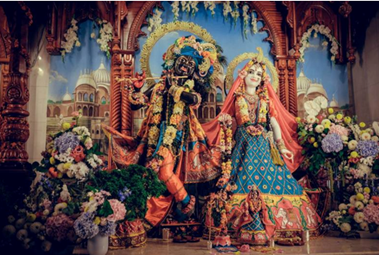

Молитва до Шрі Шрі Радги-Мадгави
хе рдга-мдгавау девау
вівасйа краа йувм
сарва йушмад-анантйа
актер ева пракаітам
хе – о; ра̄дга-ма̄дгавау – о Радга-Мадгаво; девау – верховні володарі; віш́васйа – всесвіту; ка̄ран̣ам – причина, джерело; йува̄м – Ви двоє; сарвам – все; йушмад-ананта̄йа̄х̣ – Вашої безмежної; ш́актех̣ – енергії; ева – лише; прака̄ш́ітам – те, що є проявом.
О Радга-Мадгаво, Ви є джерелом усього всесвіту. Все, що існує, є лише проявом Вашої безмежної енергії.
іччхай курута нтхау
анукӯла парістхітім
бгактна тава уддгна
дйау сйт йатх пуна
іччхайа̄ – Вашою волею; курутам – створіть; на̄тхау – о володарі; анукӯлам – сприятливі; парістхітім – умови; бгакта̄на̄м – відданих; тава – для Ваших; ш́уддга̄на̄м – щирих; др̣ш́йау – видимі; сйа̄та̄м – станьте, будь ласка; йатха̄ пунах̣ – знову.
Тож Своєю волею, о володарі мого серця, створіть сприятливі умови, щоб Ви знову явилися перед очима Ваших щирих відданих.
йе тв на вісмарантй ева
кшаам апй анурґіа
сева-ккш-рат нітйа
даранотсука-мнас
йе – ті, хто; тва̄м
– Вас; на вісмаранті – не забувають; ева – ані; кшан̣ам апі
– навіть на мить; анура̄ґін̣ах̣ – люблячі віддані; сева̄-ка̄кша̄-рата̄х̣
– що прагнуть служити; нітйам – завжди; дарш́анотсука-ма̄наса̄х̣
– чиї серця прагнуть побачити Вас.
Ваші люблячі віддані не забувають Вас ні на мить. Вони завжди бажають віддано служити Вам та їхні серця прагнуть побачити Вас знову.